| transaction_id | transaction_date | transaction_time | transaction_qty | store_id | store_location | product_id | unit_price | product_category | product_type | product_detail | |
|---|---|---|---|---|---|---|---|---|---|---|---|
| 93836 | 94090 | 2023-05-13 00:00:00.000000 | 13:33:16.000000 | 1 | 8 | Hell's Kitchen | 41 | 4.25 | Coffee | Barista Espresso | Cappuccino Lg |
| 26885 | 26942 | 2023-02-17 00:00:00.000000 | 10:49:44.000000 | 2 | 5 | Lower Manhattan | 64 | 0.80 | Flavours | Regular syrup | Hazelnut syrup |
| 63008 | 63178 | 2023-04-10 00:00:00.000000 | 15:54:01.000000 | 2 | 8 | Hell's Kitchen | 35 | 3.10 | Coffee | Premium brewed coffee | Jamaican Coffee River Rg |
| 16425 | 16455 | 2023-01-30 00:00:00.000000 | 07:41:11.000000 | 1 | 5 | Lower Manhattan | 23 | 2.50 | Coffee | Drip coffee | Our Old Time Diner Blend Rg |
| 128307 | 128644 | 2023-06-13 00:00:00.000000 | 10:31:02.000000 | 2 | 5 | Lower Manhattan | 42 | 2.50 | Tea | Brewed herbal tea | Lemon Grass Rg |
| 76536 | 76706 | 2023-04-26 00:00:00.000000 | 10:28:42.000000 | 1 | 8 | Hell's Kitchen | 29 | 2.50 | Coffee | Gourmet brewed coffee | Columbian Medium Roast Rg |
| 102770 | 103024 | 2023-05-21 00:00:00.000000 | 10:47:55.000000 | 1 | 8 | Hell's Kitchen | 53 | 3.00 | Tea | Brewed Chai tea | Traditional Blend Chai Lg |
| 147575 | 147912 | 2023-06-29 00:00:00.000000 | 14:18:00.000000 | 2 | 3 | Astoria | 43 | 3.00 | Tea | Brewed herbal tea | Lemon Grass Lg |
Beverages Sales Analysis
| Section | Details |
|---|---|
| Tools Used | Python (Pandas, Matplotlib), SQL, Quarto |
| Data Source | Internal transaction database |
Report Overview
This report analyzes sales data from a coffee shop over a given period, focusing on beverage transactions. The goal is to identify best-selling products, revenue trends, and store performance by location. Using SQL and Python, we extracted and processed transaction-level data to create visual summaries. Key findings are framed using the QIA method to drive actionable decisions, such as stocking strategies, pricing adjustments, and targeted promotions
Sample Data
This dataset contains transaction-level sales data collected from multiple beverages shop locations. Each row represents a unique transaction, with details such as the product sold, quantity, price, date, and time of purchase.
Which store location generated the highest total revenue over time?
Hells Kitchen generated the highest total revenue at 236K, followed closely by Astoria 232K and Lower Manhattan 230K. The revenue distribution among these top three stores is very close, indicating a balanced performance across key locations.
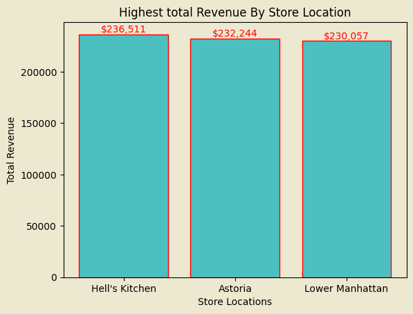
How does sales volume (quantity) trend over months?
Sales volume shows a strong upward trend over time. In January, total quantity sold was around 24K units, and it steadily increased to 50K units by June. This indicates growing customer demand or improved business performance over the months.
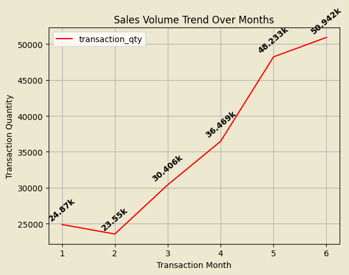
Which product categories bring in the most revenue?
Coffee is the top revenue-generating category with 270K, followed by Tea 196K, Bakery 82K, and King Chocolate 72K. The lowest revenue comes from Packed Chocolate, contributing only ₹4K. This highlights coffee and tea as the dominant contributors to overall sales.
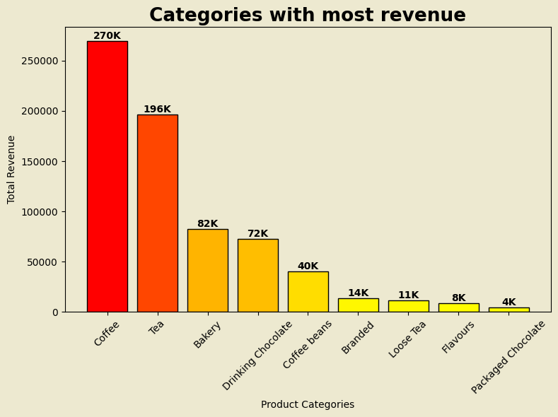
What are the top best-selling products across all stores?
In Astoria, the best-selling product is Dark Chocolate.
In Hells Kitchen, it’s Civet Cat Coffee.
In Lower Manhattan, again, Dark Chocolate leads in sales.
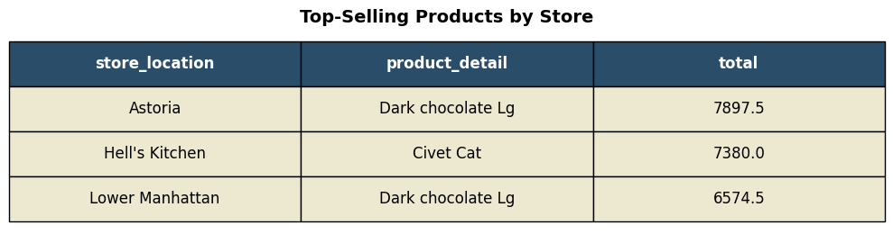
How does revenue vary by time of day (morning, afternoon, evening)?
The highest revenue comes from morning hours, contributing 43.3% of total sales. This is followed by evening (23.4%), afternoon (20.6%), and night (12.6%). This pattern suggests that customers are most active during mornings, likely for their daily coffee routines.
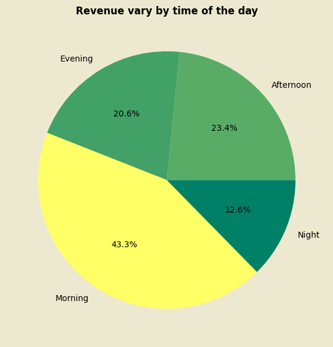
Which store has the highest average transaction value?
Lower Manhattan has the highest average transaction value at 4.81, followed by Hells Kitchen (4.66) and Astoria (4.59). While the difference is small, it suggests customers in Lower Manhattan tend to purchase slightly more or opt for higher-priced items per visit.
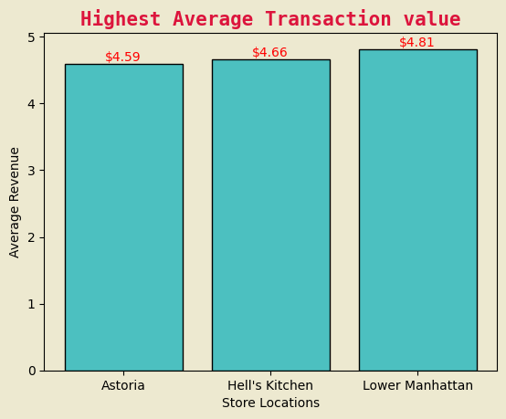
What is the hourly transaction pattern across all stores?
Transactions gradually increase during early hours and peak between 6 AM and 10 AM, aligning with typical morning coffee demand. There’s a smaller secondary rise around 2 PM to 5 PM, likely due to post-work or evening relaxation purchases. Activity drops significantly during late-night hours.
--------------------------------------------------------------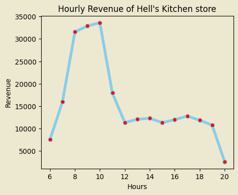
--------------------------------------------------------------
--------------------------------------------------------------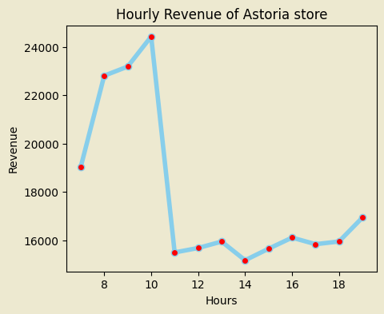
How does the popularity of each product category differ by store?
Across all store locations, the top four product categories are consistently Coffee, Tea, Bakery, and Drinking Chocolate. This indicates that customer preferences are relatively uniform regardless of location, with beverages (especially coffee and tea) dominating sales
----------------------------------------------------------------------------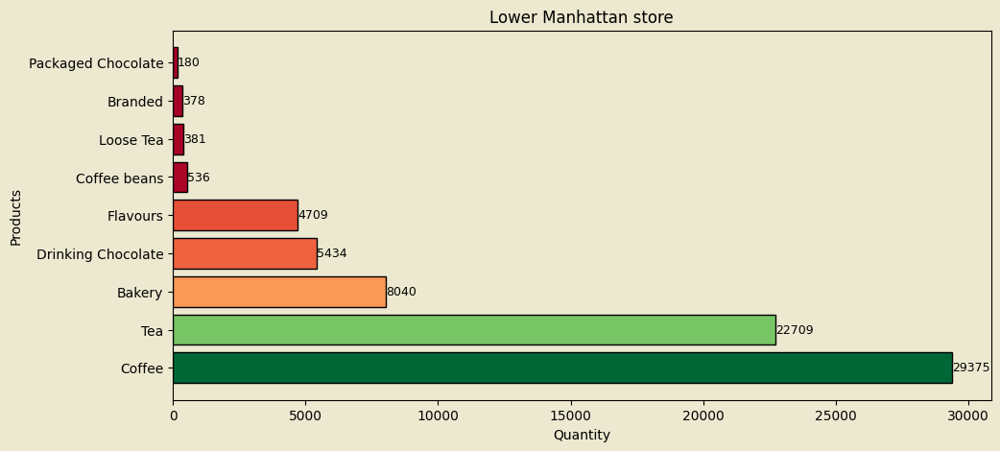
----------------------------------------------------------------------------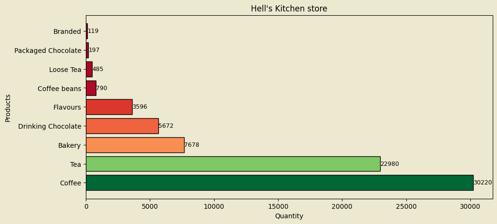
----------------------------------------------------------------------------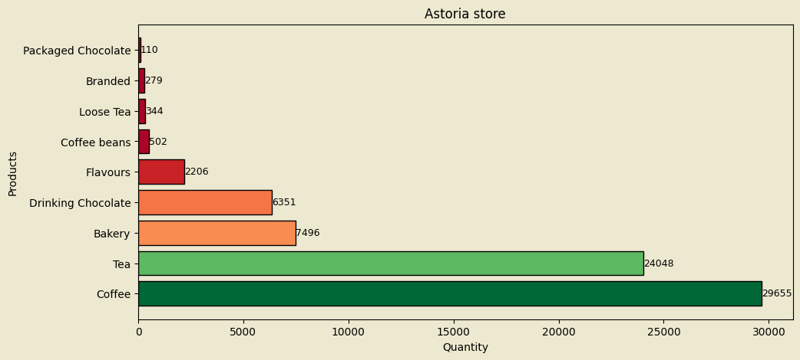
Total revenue Prediction for a transaction based on store location, time of day
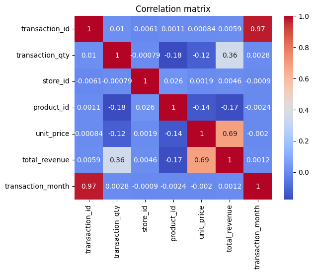
LinearRegression()In a Jupyter environment, please rerun this cell to show the HTML representation or trust the notebook.
On GitHub, the HTML representation is unable to render, please try loading this page with nbviewer.org.
Parameters
| fit_intercept | True | |
| copy_X | True | |
| tol | 1e-06 | |
| n_jobs | None | |
| positive | False |
r2 score is 0.6649849321138901Summary and Recommendations
Hells Kitchen topped in revenue, but all three major stores (Hells Kitchen, Astoria, Lower Manhattan) performed similarly — keep pushing promotions evenly across them.
Sales are rising month by month, doubling from Jan to June — plan ahead for even higher demand in the coming months.
Mornings drive the most sales (43%), especially between 9–11 AM — make sure your team and stock are ready before the rush.
Coffee and Tea dominate revenue, while Dark Chocolate and Civet Cat are top individual products — focus promos and bundles around these.
Customer tastes are similar across locations — no need to over-customize. Keep your winning categories consistent and experiment with new product bundles to boost average sales.